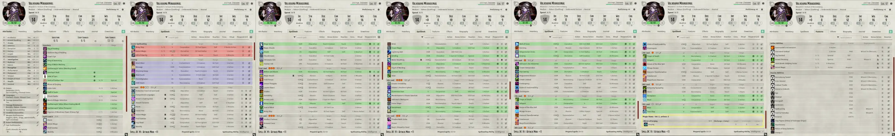

Overview
Awkward. Valkrana's awkwardness knows no bounds. Her impaired social skills and selective filter often leave the wrong impression. Even when left to her own devices, her mannerisms all exude awkwardness.
Low-energy. Aloof, operates at low battery. Certain things, such as magic or her darling, will kick Valkrana into a higher gear, but she's quick to return to her default.
Arcana. The arcane gave her a second chance at life, it gave her power. Valkrana's respect for and admiration of all things arcane leads her to seek out new magicks solely for the pleasure of finding them. And using them.
Skeletons. Finds skeletons eminently cute 'because of the way they are'. Since childhood, she's opened corpses to grin at their skeletons, oblivious to taboo. She'll dress, disassemble, dance with, and of course, dissect them.
Necromancy. Removes the meat before reanimation, and a number of her tailored spells, such as Skelegram and Skeleport, integrate skeletons. More than fodder, she makes extensive use of their utility: from manning vessels to heavy loads.
Urchin. Born of a world dragon and elf, her draconic soul was too intense for her elven body. Her papa squandered everything in botched attempts at a cure. Valkrana's childhood was all so much squalor, and the suffering of a host consumed by its soul.
Death. Her papa loved dragons, wove for her wondrous tales of them, and had maps of their whereabouts. 10-year-old Valkrana slipped away to the lair of a black dragon. There, she was slain. This has since fueled her desire to master and overcome death.
Graftling. Desperate, her papa delivered her mangled remains to an old acquaintance, a necromancer. Valkrana was reborn as a graftling, an experimental, bone-grafted skeletal undead, her reanimated body now able to withstand her draconic soul.
Cookies. During the isolation that followed, Valkrana's papa would reward good behavior with a cookie. She came to see them as a token of affection. Now, she bakes them for others as a way to try to find her place with them. She puts some weird stuff in cookies though.
Ilyana. Her darling. Rather than 'me', Valkrana thinks of and refers to herself as 'my darling's me', which illustrates just how deeply she imprinted on Ilyana. In her clingy, yandere-like obsession, she'll go to any length for Ilyana, delighting in the privilege. They complement one another perfectly.
Intel. 'Information,' she says, 'is the most valuable commodity.' Valkrana values not only knowledge gleaned from books, but from the ears of urchins, the lips of tipsy officials, the archives of governments.
Underworld. Thanks to the villainous influence of her late papa, Valkrana can navigate the cutthroat world of thieves and assassins. She once carved a place for herself there as a powerful infomonger. While that time has passed, her expertise has not.
Otherworldly. Valkrana once travelled to new planes, worlds, and universes in seeking a way to restore her darling's soul. With Ilyana's revival and eventual ascension, Valkrana now does so as her envoy. These journeys make her appearances in multiple campaigns, settings, and systems canon to the character.
Baldur's Gate 2
Recruitable voiced, interactive NPC.
Bones alive! Bring the multiverse's most awkward necromancer to your fight against Irenicus with the Valkrana NPC mod. This full-featured companion includes 100+ voiced lines, a character quest, world reactions, custom scripts, and more.
At first, Valkrana appears a skeletal wizard detached from the world around her. Provided you don't succumb to your bloodline, she hardly raises an objection no matter how dumb or duplicitous your actions. But given time with her awkwardness, you'll come to find that despite her enduring pragmatism, she is anything but detached. Download: Nexus Mods or Direct.
Baldur's Gate 3
Necromancy spells, new encounters, and more.
Voted Nexus Mod of the Month, Valkrana's Spellbook adds 15 of her signature spells, available to all spellcasters. Valkrana's Lesser Skeleport in particular is a favorite, and an adaptation of a custom spell from the character's early days. Others add new skeletal summons, earlier reanimation options, inflatable pools brimful with negative energy, and more. Download: Nexus Mods or Direct.
They rolled initiative. Rattle 'em, boys! With Valkrana's Skeleton Crew, one of 60+ random skeletons will join your side at the start of combat. Valkrana's Undead Encounters adds new bosses, encounters, and loot across all acts. These and other mods in the BG3 "Valkrana's" series are available on Nexus Mods or Direct.

Civilization VI
Fully-customized leader mod.
Introduces Valkrana as an alternative leader of Russia, Ravenloft (D&D), the Forsaken (WoW), Nilfgaard (The Witcher), and Valenwood (TES). Cast your spells at the perfect moment for maximum effect, or at your leisure while your skeletons hack at the enemy.
This high-quality leader mod comes with a spellbook ability, custom units, a tailored agenda, and more. Subscribe on the Steam Workshop or download Direct. The Valkrana's Bunker workshop collection includes a main menu theme and her alternative personas.

VRChat
An avatar to be reanimated for.
Hand-crafted from scratch, bonemeal, and brow-sweat to reflect Valkrana's official design, this low-poly model ain't perfect, but it's a great start for anyone who wants to quell virtual worlds as the Endbringer herself. Add to Favorites
Tabletop Simulator
Ultra dynamic pose figurine.
Will Valkrana's indefatigable skeletons harry your players, will her intel hoard advance their quest, will she join as the party wizard, or perhaps all of the above? Whatever she does, she'll be awkward as hell about it. Meeple up on the Steam Workshop.
Pillars of Eternity II
Recruitable adventurer character mod.
Visit the Steam Workshop to bring Valkrana to your Deadfire party. (She's level 22, but when recruiting adventurers, you can tick the "Custom Level" box to recruit higher-level adventurers at or below your party level.)
Multiclassed between Beckoner Chanter and Wizard for steady skeleton summoning and arcane spellcasting. AI is set to cast Ancient Brittle Bones when off cooldown, targeting the most afflicted enemy. Also constantly chants Many Lives Pass By, Each Leaving Footprints. Between the two of these, spooky scary skeletons are constantly pouring onto the battlefield.
Autograph
Finally, something worth hanging over your fireplace.

You've waited two weeks in an unrelenting snowstorm, chilled to the bone. Your leg bag is over capacity. Your rations are long depleted. But you survived. You made it. Finally, it's your turn to approach the table.
Valkrana fumbles multiple greetings, and your board. All that effort keeping it dry; now it's damp and dirty. She doesn't seem to care, just focuses on the lines to your sides. Whispers erupt around you. You can't help but shiver—yours might just be the first shikishi with a personal touch! You place it before her. She regards your soiled board with contempt only as long as it takes to place her autograph. You shiver at that, too. Then her attention flicks to the boards at her other two hands as she slides yours forward without another word. You snatch it up and hurry off, too overcome with glee to notice all the envious stares trained your way. What a rush! What a wonder! She didn't even care! This was worth your life savings!
Generations later, your great great great granddaughter lugs the family heirloom to a traveling artifact appraisal troupe. They have a laugh at you for treasuring someone's autograph. Hah.
Trivia
The crumbs of the cookie.

Bakes cookies with unorthodox ingredients, such as mushrooms or kimchi, inspired in part by her darling's strange palate.
Has a blast playing skeleton Jenga with a blowtorch.
Speaks Common fluently but imperfectly due to her papa raising her strictly on Elvish. Valkrana learned Common solely from books.
Finds ponchos both fashionable and comfortable, especially those in orange.
Learned to be a proficient chef in service to her darling.
Maintains urchin- and simulacrum-run printing presses to help control and gather information.
Had a cat familiar named Nyoom, inherited from her darling.
To her, there is nothing more intimate or meaningful than a kiss.
Sometimes forgets the needs of mortals; reads up on them in books like "Mortals: What Are They and Why Do They Even Bother Existing?"
Giddy, childish fascination with new or strange arcana.
Had a sindoor dragon pin inherited from her late papa.
Uses sigil-incribed staves as foci.
Her obsession with her darling manifests in yandere tendencies.
Valkrana is the Captain of the HMS Parfait, a sailing seafaring vessel turned airship.
For years, Valkrana would only tilt her witch's hat to cover her mangled eye. Now, she wears a patch stitched with a goofy skull.
After slaying her birth mother, the dragon Ssstzrazolik, Valkrana would revive her many times over the following days to exact revenge.
Before reanimation, Valkrana's original subrace was wood elf.
Her favorite drink is a root beer float sprinkled with bone meal, a bone meal float.
Driver's license has been permanently revoked for knocking a government building out of the sky. She panics when driving.
Rather than a single hoard, Valkrana keeps treasure caches in many locations, such as vaults, killboxes, and demiplanes. Her intel hoard is priceless.
Valkrana's zodiac sign is cancer.
Preferred clothing or armor is a big ole t-shirt and flippy floppies.
Carries sealable vials with rolled paper for correspondence. Empty vials store foraged items used in precision teleportation.
Collects mementos of Ilyana and their time together—from flyers to fingernails.
Gifted a jangly wooden skeleton toy by her urchins.
Camp duties typically involve cooking, having her skeletons keep watch, and anything Ilyana needs of her.
Once unintentionally hijacked the Weave to cast Sending to every being on every plane. The topic: the great, mighty Ilyana Miraquinal. A cool, crisp 24 words—improvised. "The Runic Workshop is deceiving you. They will cause the end of the world. Do not fret, Ilyana will save you. Worship Ilyana today!"
Valkrana Simulacrum 1 is the castellan of Citadella Ilyana.
Wears a maid outfit while serving Ilyana in their quarters.
Personal spells include: Valkrana's Lesser Skeleport, Bone Disc, Rattling Geyser, Enduring Link, Greater Skeleport, Arc Vivisector, Sacrificial Skelly, Nuanced Command.
Single-handedly wiped out most of a goblin civilization. Sundered the floating gnome nation Makurosu with a hail of meteors, which knocked it from its place amongst the clouds.
Trained in the use of firearms during her underworld tenure.
Once the Prince of Urchins with intel as her sphere of influence.
Mains the Bucket of Bones character in Super Skirmish Guys Everything.
Valkrana is asexual, but not aromantic.
Committed suicide at her darling's initial rejection, only to be reanimated as an undead cyborg.
For many years, a treasured painting of her papa watched over her desk.
A homebody at heart, but delights in adventuring with her darling, or in pursuit of rad magic.
Won her too-large skeleton mascot t-shirt in a raffle ran by a now-defunct distilled milk manufacturer. Most of the raffle entries were hers.
Her belly button is an innie, and lint-free.
Will bite a creature's skeleton to sample its unique bone-taste, but generally resists the hunger for a full meal.
Rare bones excite both her personal fondness for skeletons and her graftling predilection.
Attempts at puns are purely to draw a grin or giggle from her darling.
Valkrana is the unrealized villain, only ever a few mistakes away.
Owned a bakery franchise that spanned continents and served as a front for her intel ring. The name: Cookie Shack.
Doesn't typically name her skeletons; however, one earned the name Happy, pronounced "Hoppy", because of its tenacity and expression.
Names things "because of they way they are" or "because that is what it does".
Insisted on attending a onesie party as a cookie. It was a polymorph party. A rat tried to eat her.
A necromancer in practice rather than breadth, defensive and divination spells from other domains form the largest chunk of her arcane repertoire.
Follows no religion, but worships Ilyana.
Known languages: Common, Elvish, Celestial, Demonic/Abyssal, Draconic, Necril, Thieves' Cant.
When revived as a magitech cyborg, was outfitted with a mini stasis chamber + nuclear core with Fkndustries termlink software and an auxiliary limb with laser firing system.
Valkrana's favorite bones are knucklebones and cervical (neck) vertebrae.
Has one of her darling's old ribs stored in her body.
Found her wizard hat in the forgotten cellar in which she honed her craft for years, beneath the same mage tower that'd expelled her.
Owns a copy of MediEvil for the Sony Playstation, starring Sir Daniel Fortesque.
Devotion is such that she can interpose herself between Ilyana and an incoming attack, even from a great distance or across planes of existence. However, the drain of having done so limits its use.
Attaches a tailor-made Ilyana plushie to her bag of holding.
Ambidextrous with up to four hands.
Will not sully her cookies by dipping them. Will eat with coffee, bone meal float, or another beverage.
Favorite anime include Overlord, Happy Sugar Life, Jormungand, and Skull-face Bookseller Honda-san.
Subconsciously inserts an eldritch escalator into dimensions she's created.
Valkrana mains an asuran necromancer in Guild Wars 2. Her build combines "Rise!" and "Death Nova" with the Reaper spec to spam bone minions and hit like a train.
Took her first apprentice when teaching magic to feline races. Valkrana would later abandon this apprentice upon completing her search for her darling.
Sheet
Dungeons & Dragons 5th edition character sheet.
The image below only shows bookmarked inventory. It doesn't include assets held elsewhere, currency, the contents of a stuffed bag of holding, etc. Want to import Valkrana into your FoundryVTT D&D campaign? Download the actor file. Last updated: 04/25/2024

Skeletons
A necromancer is never short on friends. She has them in spades.
Valkrana doesn't typically name her skeletons. Cute as they are, they are disposable tools. However, she will bestow a skeleton with a name if it performs a noteworthy feat.
Happy — Looks happy. Survived an onslaught of umber hulks. [LOST]
Pocky — Pock-marked. Survived a brush with the orange layer of a prismatic wall. [LOST]
Chilly — Freezer burns. Struck by a cone of cold spell during the few seconds between death and finger of death's permanent reanimation. [DESTROYED]
Cloppers — A mounted bandit struck so hard by Finger of Death that its skeleton was fused with that of its horse.